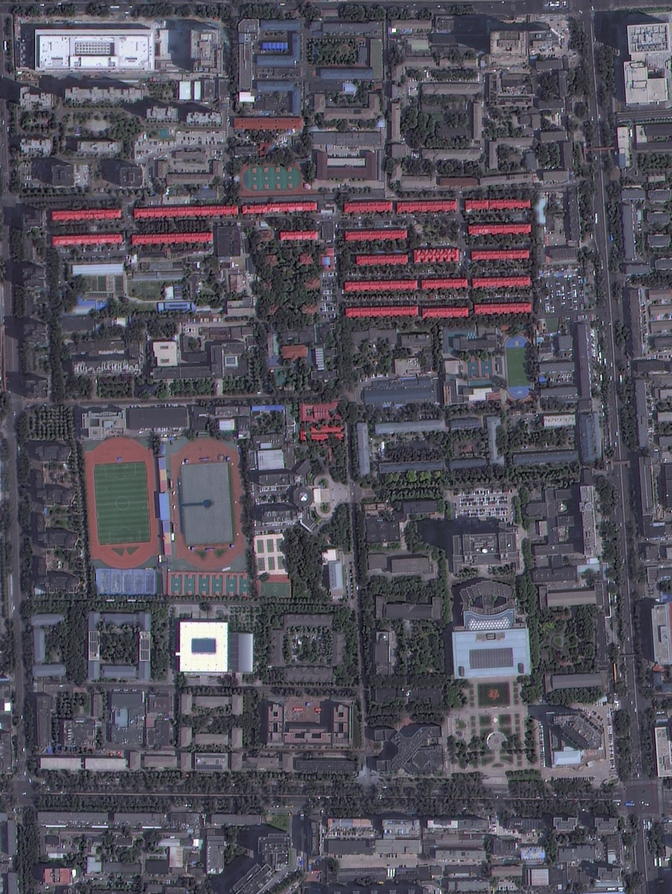

Selected feature
校园建筑
该建筑由 OSM 轮廓生成，屋顶投影高分二号纹理，立面使用 Image2 生成式材质。当前模型用于空间展示，不代表工程测量高度或真实窗型。

该建筑由 OSM 轮廓生成，屋顶投影高分二号纹理，立面使用 Image2 生成式材质。当前模型用于空间展示，不代表工程测量高度或真实窗型。
统计值直接来自与三维模型分离的 `campus_assets_v5.json`，用于检查场景规模、属性完整性和空间要素组成。
延续校园植物 WebGIS 的“数据与模型分离”思路：数据层管理属性与统计，GLB 只负责高效显示几何和材质。
裁剪高分二号真彩与 NDVI，使用 Sentinel-2 作为区域植被先验，并统一到校园局部米制坐标。
从 OSM 提取建筑、道路和地表多边形；属性与坐标保存在 JSON，不写死在网页界面里。
v5 回到原始四波段 GF2，重投影到 EPSG:32650，进行 OSM 约束的屋顶色谱、植被与阴影候选识别；25 栋红屋顶通过相对匹配修正采样，其余保留待核查状态。
建筑坐标保持不变，统一影像投影与 UV；只有通过候选匹配的屋顶应用局部采样偏移。未知外墙保持占位，不把屋顶颜色当成墙面颜色。
Blender 场景导出为带贴图 GLB；Three.js 提供搜索、拾取、漫游、阴影和图层显隐。
不同数据源承担不同任务。网页明确区分影像纹理、植被先验、几何轮廓与估算高度，避免把展示级模型表述为测绘成果。
提供校园真彩底纹、屋顶投影纹理和局部 NDVI 树冠候选，是本项目的主要高分辨率观测数据。
分辨率不足以定位单栋建筑或单棵树，仅作为区域尺度植被强弱的先验信息。
提供 231 个建筑轮廓、道路、运动场和绿地水体；名称与类型用于网页检索和属性卡片。
v5 不再按建筑编号随机分配红砖或冷暖墙色。所有无法从卫星确认的立面使用中性石材占位（沿用生成式表面纹理）；它不是立面识别结果。
窗面和女儿墙仍是规则化示意；v5 已取消无影像依据的随机屋顶设备。900 个树木候选来自重新投影的高分 DN 植被指数，达到显示数量上限，不代表实测株数。
默认模式最简单：拖动旋转、滚轮缩放。想走进校园时，再点击顶部“进入校园”；页面会一直显示中文操作提示。
浏览器不允许普通本地网页直接读取三维模型。请关闭本页，在项目文件夹中双击下面这个文件；它会自动启动本地观察器，不需要安装任何东西。
打开观察者模式.cmd